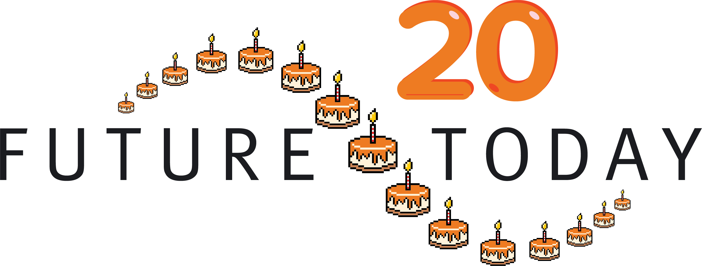

Регистрация
Имя
Фамилия
Укажи, пожалуйста, свою почту
Оставь номер телефона — он может понадобиться для связи
У меня иностранный номер
Где ты учишься или учился(ась)? Напиши название учебного заведения
Какое у тебя направление подготовки? Напиши свою специальность
Выбери город, в котором ты сейчас живёшь
- выбрать -
Москва или МО
Санкт-Петербург
Алматы
Другой
Укажи своё гражданство
- выбрать -
РФ
Беларусь
Казахстан
Армения
Киргизия
Другое
Укажи, какую степень образования ты получаешь сейчас или получил(а) последней
- выбрать -
Бакалавриат
Специалитет
Магистратура
Аспирантура
Среднее специальное
Среднее общее (школа)
Когда планируешь или уже закончил(а) учёбу?
- выбрать -
2022 и ранее
2023
2024
2025
2026
2027
2028
2029 и позднее
Сколько часов в неделю ты готов(а) уделять стажировке?
- выбрать -
Менее 20 часов
20 часов и более
30 часов и более
40 часов и более
Направление первого приоритета
- выбрать -
Account manager
Projects
Research Intern
Sales
SMM
University Partnership
Video Editor
Стажёры-проджекты работают над разнообразными проектами для крупных компаний и внутренних инициатив. Ты будешь участвовать в реализации проектов по рекрутингу молодых специалистов — от привлечения кандидатов до организации карьерных мероприятий и продвижения бренда работодателя.
С наставником ты научишься управлять процессами, работать с командой и подрядчиками, а также анализировать статистику, развивая креативный подход к задачам.
Ждём бакалавров, специалистов, магистров и аспирантов 2022–2028 годов выпуска, а также студентов, получающих среднее профессиональное образование, 2026 года выпуска, готовых работать от 20 часов в неделю.
Стажёры направления «Исследования» занимаются координацией одного из самых масштабных исследований о молодых специалистах в России! Проект уже 9 лет изучает, как студенты и выпускники строят свою карьеру и взаимодействуют с рынком труда.
Твоя задача — помочь организовать сбор данных: находить и координировать сборщиков в разных вузах. Ты погрузишься в реальную проектную работу, научишься управлять командами и отслеживать прогресс. Будешь анализировать статистику и принимать решения, чтобы достичь целей. Это отличный шанс прокачать soft skills, получить опыт в исследованиях и аналитике.
Ждём бакалавров, специалистов, магистров и аспирантов 2025–2027 годов выпуска, а также студентов, получающих среднее профессиональное образование, 2026 года выпуска, готовых работать от 20 часов в неделю.
Команда SMM создаёт креативные tag yourself, карьерные подборки и полезные лайфхаки для студентов — рассказываем о профессиях просто и интересно, от нефтехимии до ритейла. За несколько месяцев ты научишься писать крутые тексты, поработаешь с топовыми компаниями и разберёшься, как построить крутую карьеру. В твои задачи будет входить генерация трендовых тем и участие в мозговых штурмах, чтобы написать креативный пост, рассылку или подготовить содержательный дайджест. Также тебе предстоит отслеживать статистику и соблюдение правил публикаций. Получишь реальный опыт, поработаешь в крутой команде и сделаешь контент, который читают тысячи студентов.
Ждём бакалавров 2024–2028 годов выпуска, специалистов и магистров 2024–2027 годов выпуска, а также студентов, получающих среднее профессиональное образование, 2026 года выпуска, готовых работать от 20 часов в неделю.
Ты будешь работать с разными форматами видеоконтента — от генерации идеи до финального монтажа. Стажёры этого направления создают отчётные ролики, промо и короткие видео для соцсетей. Это твой шанс прокачаться в монтаже, поработать на съёмках и разобраться, как видеоформаты помогают рассказывать о профессиях и карьере, какие из них наиболее эффективно использовать для разных каналов коммуникации. Если монтаж для тебя — это не просто склейка кадров, а способ рассказывать истории, тебе точно будет интересно.
Вместе с наставником тебе предстоит монтировать видео, работать со звуком и графикой, участвовать в съёмках и придумывать новые форматы. Освоишь Adobe Premiere Pro, Figma и After Effects. Вместе с наставником научишься делать ролики, которые хочется досмотреть до конца — и собирать миллионы просмотров.
Ждём бакалавров, специалистов, магистров и аспирантов 2022–2028 годов выпуска, а также студентов, получающих среднее профессиональное образование, 2026 года выпуска, готовых работать от 20 часов в неделю.
Sales — это про умение продавать: искать клиентов, убеждать и не бояться делать первый шаг. Здесь пригодятся настойчивость, лёгкость в общении, немного креатива и аналитики. Подойдёт тем, кто не сдаётся с первого «нет» и радуется даже маленьким победам.
На стажировке ты будешь работать с запросами компаний, презентовать медиа-продукты, вести переписку и встречи, оформлять предложения и вести CRM. Вместе с наставником ты научишься вести переговоры, работать с возражениями, продавать по ценностям и разбираться в sales-аналитике.
Бонус: на стажировке ты также будешь проходить обучение в школе продаж, где получишь ключевые знания по работе с клиентами, научишься аргументировать предложения и сможешь погрузиться в реальную практику продаж с нуля.
Ждём бакалавров и специалистов 2021–2028 годов выпуска, магистров 2023–2027 годов выпуска и аспирантов 2026–2028 годов выпуска, а также студентов, получающих среднее профессиональное образование, 2024–2026 годов выпуска, готовых работать от 20 часов в неделю.
Ассистент менеджера по взаимодействию с вузами выступает связующим звеном между вузами и будущими стажёрами. Ты будешь общаться с Центрами карьеры, рассказывать о стажировках и помогать студентам находить возможности для роста. Под руководством наставника ты быстро научишься эффективно взаимодействовать с официальными представителями вузов. В твои задачи также будет входить организация встреч и видеозвонков, ведение отчётности и анализ данных. Ты получишь реальный опыт и почувствуешь, как работает масштабное сотрудничество.
Ждём бакалавров, специалистов, магистров и аспирантов 2022–2028 годов выпуска, а также студентов СПО, заканчивающих обучение в 2026 году, готовых работать от 20 часов в неделю.
Ты станешь мостиком между командой и клиентом: будешь вести коммуникацию, помогать бизнесу достигать целей, а студентам — находить карьерные возможности. Направление подойдёт тем, кто хочет развивать навыки делового общения и разбираться во всех трендах HR-рынка.
Вместе с наставником ты научишься выстраивать общение с разными людьми, следить за трендами рынка труда и помогать студентам находить карьерный путь, а компаниям — выбирать правильную стратегию по развитию своего бренда.
Ждём бакалавров и специалистов 2021–2028 годов выпуска, магистров 2023–2027 годов выпуска и аспирантов 2026–2028 годов выпуска, а также студентов, получающих среднее профессиональное образование, 2024–2026 годов выпуска, готовых работать от 20 часов в неделю.
С какими из этих инструментов ты умеешь работать?
(Можно выбрать несколько вариантов)
Adobe Premiere Pro
Figma
Final Cut Pro
DaVinci Resolve
CapCut
Sony Vegas Pro
Movavi Video Editor
Filmora
Направление второго приоритета
- выбрать -
Account manager
Projects
Research Intern
Sales
SMM
University Partnership
Video Editor
Стажёры-проджекты работают над разнообразными проектами для крупных компаний и внутренних инициатив. Ты будешь участвовать в реализации проектов по рекрутингу молодых специалистов — от привлечения кандидатов до организации карьерных мероприятий и продвижения бренда работодателя.
С наставником ты научишься управлять процессами, работать с командой и подрядчиками, а также анализировать статистику, развивая креативный подход к задачам.
Ждём бакалавров, специалистов, магистров и аспирантов 2022–2028 годов выпуска, а также студентов, получающих среднее профессиональное образование, 2026 года выпуска, готовых работать от 20 часов в неделю.
Стажёры направления «Исследования» занимаются координацией одного из самых масштабных исследований о молодых специалистах в России! Проект уже 9 лет изучает, как студенты и выпускники строят свою карьеру и взаимодействуют с рынком труда.
Твоя задача — помочь организовать сбор данных: находить и координировать сборщиков в разных вузах. Ты погрузишься в реальную проектную работу, научишься управлять командами и отслеживать прогресс. Будешь анализировать статистику и принимать решения, чтобы достичь целей. Это отличный шанс прокачать soft skills, получить опыт в исследованиях и аналитике.
Ждём бакалавров, специалистов, магистров и аспирантов 2025–2027 годов выпуска, а также студентов, получающих среднее профессиональное образование, 2026 года выпуска, готовых работать от 20 часов в неделю.
Команда SMM создаёт креативные tag yourself, карьерные подборки и полезные лайфхаки для студентов — рассказываем о профессиях просто и интересно, от нефтехимии до ритейла. За несколько месяцев ты научишься писать крутые тексты, поработаешь с топовыми компаниями и разберёшься, как построить крутую карьеру. В твои задачи будет входить генерация трендовых тем и участие в мозговых штурмах, чтобы написать креативный пост, рассылку или подготовить содержательный дайджест. Также тебе предстоит отслеживать статистику и соблюдение правил публикаций. Получишь реальный опыт, поработаешь в крутой команде и сделаешь контент, который читают тысячи студентов.
Ждём бакалавров 2024–2028 годов выпуска, специалистов и магистров 2024–2027 годов выпуска, а также студентов, получающих среднее профессиональное образование, 2026 года выпуска, готовых работать от 20 часов в неделю.
Ты будешь работать с разными форматами видеоконтента — от генерации идеи до финального монтажа. Стажёры этого направления создают отчётные ролики, промо и короткие видео для соцсетей. Это твой шанс прокачаться в монтаже, поработать на съёмках и разобраться, как видеоформаты помогают рассказывать о профессиях и карьере, какие из них наиболее эффективно использовать для разных каналов коммуникации. Если монтаж для тебя — это не просто склейка кадров, а способ рассказывать истории, тебе точно будет интересно.
Вместе с наставником тебе предстоит монтировать видео, работать со звуком и графикой, участвовать в съёмках и придумывать новые форматы. Освоишь Adobe Premiere Pro, Figma и After Effects. Вместе с наставником научишься делать ролики, которые хочется досмотреть до конца — и собирать миллионы просмотров.
Ждём бакалавров, специалистов, магистров и аспирантов 2022–2028 годов выпуска, а также студентов, получающих среднее профессиональное образование, 2026 года выпуска, готовых работать от 20 часов в неделю.
Sales — это про умение продавать: искать клиентов, убеждать и не бояться делать первый шаг. Здесь пригодятся настойчивость, лёгкость в общении, немного креатива и аналитики. Подойдёт тем, кто не сдаётся с первого «нет» и радуется даже маленьким победам.
На стажировке ты будешь работать с запросами компаний, презентовать медиа-продукты, вести переписку и встречи, оформлять предложения и вести CRM. Вместе с наставником ты научишься вести переговоры, работать с возражениями, продавать по ценностям и разбираться в sales-аналитике.
Бонус: на стажировке ты также будешь проходить обучение в школе продаж, где получишь ключевые знания по работе с клиентами, научишься аргументировать предложения и сможешь погрузиться в реальную практику продаж с нуля.
Ждём бакалавров и специалистов 2021–2028 годов выпуска, магистров 2023–2027 годов выпуска и аспирантов 2026–2028 годов выпуска, а также студентов, получающих среднее профессиональное образование, 2024–2026 годов выпуска, готовых работать от 20 часов в неделю.
Ассистент менеджера по взаимодействию с вузами выступает связующим звеном между вузами и будущими стажёрами. Ты будешь общаться с Центрами карьеры, рассказывать о стажировках и помогать студентам находить возможности для роста. Под руководством наставника ты быстро научишься эффективно взаимодействовать с официальными представителями вузов. В твои задачи также будет входить организация встреч и видеозвонков, ведение отчётности и анализ данных. Ты получишь реальный опыт и почувствуешь, как работает масштабное сотрудничество.
Ждём бакалавров, специалистов, магистров и аспирантов 2022–2028 годов выпуска, а также студентов СПО, заканчивающих обучение в 2026 году, готовых работать от 20 часов в неделю.
Ты станешь мостиком между командой и клиентом: будешь вести коммуникацию, помогать бизнесу достигать целей, а студентам — находить карьерные возможности. Направление подойдёт тем, кто хочет развивать навыки делового общения и разбираться во всех трендах HR-рынка.
Вместе с наставником ты научишься выстраивать общение с разными людьми, следить за трендами рынка труда и помогать студентам находить карьерный путь, а компаниям — выбирать правильную стратегию по развитию своего бренда.
Ждём бакалавров и специалистов 2021–2028 годов выпуска, магистров 2023–2027 годов выпуска и аспирантов 2026–2028 годов выпуска, а также студентов, получающих среднее профессиональное образование, 2024–2026 годов выпуска, готовых работать от 20 часов в неделю.
С какими из этих инструментов ты умеешь работать?
(Можно выбрать несколько вариантов)
Adobe Premiere Pro
Figma
Final Cut Pro
DaVinci Resolve
CapCut
Sony Vegas Pro
Movavi Video Editor
Filmora
Резюме:
Можешь прикрепить сейчас или прислать позже — как тебе удобно.
Формат: PDF, DOCX, PNG, XLSX (макс. 15MB)
ОТПРАВИТЬ